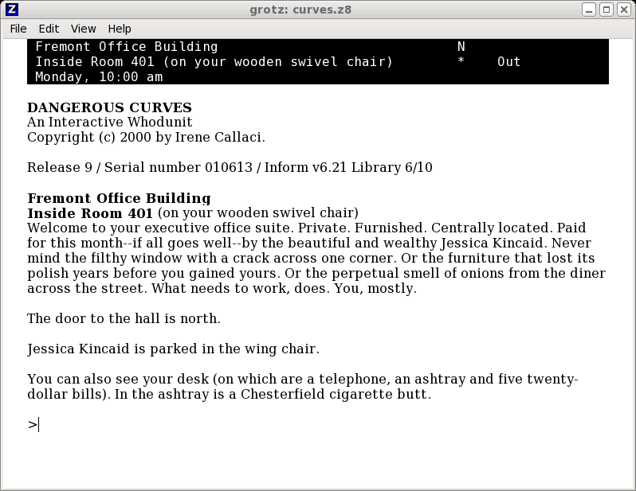
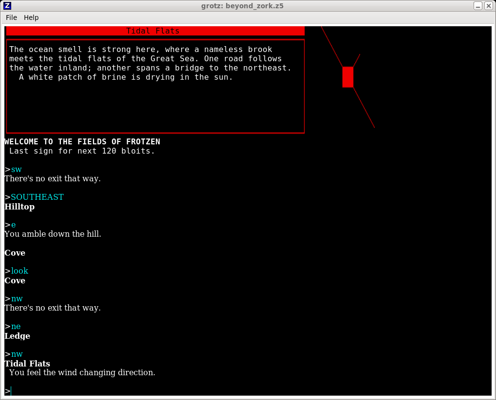
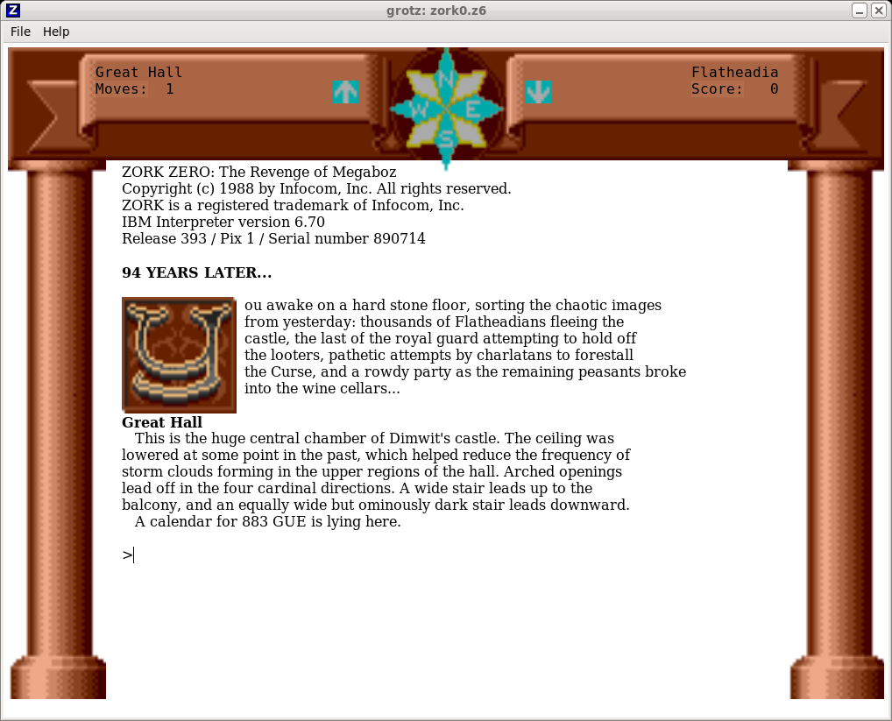

• Articles
• Articles about computing
grotz -- a Z-code interactive fiction interpreter for GTK
Version 0.2c, April 2012
grotz is a GTK port of Frotz -- the classic Z-code game engine.
grotz, like Frotz, is intended for playing 'interactive fiction'
games compiled for the Inform Z-machine platform. Although the
Z-machine is, in a sense, an archaic and defunct platform, many
games and stories were developed for it, and more continue to
be written. grotz makes a reasonable job of playing most of the
original Infocom games -- Zork, Arthur, Lurking Horror, etc --
including (to some extent) graphics and sound. The world of
interactive fiction has moved on since the Infocom days, but
these old games still exercise a Z-code interpreter thoroughly
-- more so than modern developments which rely less on the Z-machine
to provide the complete user interface.
grotz is intended to support Linux and Windows using exactly the same code and
build files. It is written entirely in C, and uses a single-Makefile build
system which is very simple, and could probably be adapted to compile for other
platforms on which GTK runs. The primary platform is Linux -- there are
already good Z-code interpreters for Windows. It's always struck me
as anomalous that there are few stable, feature-rich Z-code platforms
designed for modern Linux desktops. Of course, there is Gargoyle --
but Gargoyle's focus seems to be on typography rather than comprehensive,
specific Z-machine support.
grotz is far from being a finished product, but at present it seems to
be basically functional. Bug reports, etc., are welcome; bug fixes
even more so ;)
Features
- Supports all the Z-code versions that Frotz supports, and
adds support for zblorb archives
- Some support for Z-code version 6 graphics (see below)
- Uses variable-pitch fonts where possible, which most people find easier
to read than console fonts
- Unicode support, both for keyboard and screen
- Mouse support, with games the implement it. You can move around
by clicking the compass rose in Zork Zero, for example
- Transparent and true-colour text support, as defined in
version 1.1 of the ZMachine specification
- Supports Amiga-style box graphics, for those games that require
this feature (e.g., Beyond Zork)
- Transcript/scrollback viewer
- Rudimentary sound support
Screenshots

grotz with a text-only game

'Box art' support in Beyond Zork

There are some outstanding issues with colour rendering in some
V6 games
Building and installing
One of the goals of grotz is to build on Linux and Windows (using MinGW
and Msys)
using unsophisticated build tools. In principle, all that is required
are GTK development libraries and headers, and a C compiler.
Building the program ought to be as simple as unpacking the source
code and typing make bundle. This should compile
everything, and copy the compiled binary and supporting libraries
to the platfom-specific subdirectory of the deploy
directory. In the Linux case, there will be no additional libraries,
because we expect to find them at the system level. On Windows,
binaries of the GTK libraries are copied alonside the program
executable, making a big bundle ready for the Windows installer.
On Windows, the source code comes with the development version of
GTK bundled, as most Windows developers do not have this. All this
stuff is in the winstuff directory.
The assumed use of Msys allows us to treat Windows and Linux builds
as essentially the same. Msys provides Windows versions of the
usual Unix cp, etc., commands, and the Makefile asumes
that these are locatable on the %PATH%.
Running grotz
You can specify a Z-code story file on the command line, or by
selecting File|Open... Infocom version 6 files with graphics
have an additional complexity -- more on this below.
When a story is running, most menu options will be disabled -- the
Z-machine specification provides no facility by which the state of
play or the environment can be changed other than by the text typed
by the user. To use the menu again, you'll have to exit the current
story (usually by typing 'quit'). You can quit the program at any
time, but the game state will not be saved unless you save it
through the game itself.
It's important to bear in mind that Z-code is an archaic
format, from the early days of personal computing. There's a limit
to how much can be done to modernize the look and feel of Z-code
games. Some Z-code games, for example, do their own character input
and editing -- and they often don't do it very well. If a
Z-code program asks for input a line at a time, then at least
the Z-code interpreter can provide line-editing facilities.
But even then the program will probably be drawing a prompt, and
expecting input to be echoed to the screen just like on a terminal.
grotz does what it can to wrap a modern user interface around an
ancient virtual machine architecture -- but that often turns out
to be not very much.
Configuration file
grotz creates a directory $HOME/.grotz on Linux or
c:\Users\[user]\AppData\Roaming\grotz on Windows.
The configuration file grotz.ini is saved in this
directory, as are certain temporary files. There are certain settings
in the configuration file that are not accessible through the
GUI -- these are described below.
Font issues
grotz will allow any font present on the system to be used for the
display. However, although Inform's specification does hint at the
possibility of using variable-pitch fonts, the screen model is
implicitly based on a fixed size rectangular grid of cells. That
remains true even for version 6. Z-code games and stories can,
and nearly always do, position text at absolute row and column
positions. The screen model does allow for wrapping and scrolling
of text, so in principle a Z-code program could output text in
large blocks and allow the interpreter to flow it nicely onto
the screen. In practice, the code generated by Z-code
compilers, even modern ones, outputs text word-by word at
specified screen positions. All this makes it very difficult to
organize text in a book-like way.
In short, selecting a variable-pitch font may work reasonably
well with some games and stories. It will often be
necessary to adust the screen size and font to find a workable
combination. Bear in mind that the screen size is worked out
to accomodate the longest possible row of characters of a particular
font. With variable pitch, many of the rows will be unfilled, because
most characters are less wide than the largest in the font. There
will therefore be a substantial ragged right margin regardless of
the font and size settings, because grotz has no way of knowing
that the story won't output a whole row of X's or something
(and, in fact, this kind of behaviour is not uncommon). Having said
all that, in practice the use of variable-pitch fonts works
pretty well, considering all the problems, and is recommended.
Unicode support
grotz supports unicode output and, to some extent, input --
to the extent that Z-machine, the operating system, GTK, and
installed fonts do. Running David Kinder's Unicode.z5 test program should
produce either reasonable output, or complaints about missing
fonts (I forgot to install Coptic support on my Linux desktop
machine, for some reason). If it produces nothing but
question marks or hex boxes, something is wrong.
Unicode characters can be entered so long as they are available
as a single keystroke, and so long as GTK understands what
unicode symbols the keystrokes map on to. The 'dead key' method
of entering extended key codes is not, as yet, supported.
Please note that unicode support depends on a co-operative operating
system configuration. grotz cannot itself make up for missing
fonts or libraries, or a dubious locale configuration.
zblorb support
Many IF authors now provide Z-code programs bundled into 'blorb' archives.
Such files typically have names ending in '.zblorb'. Files with
similar names, like '.gblorb' may well be in the same format, but probably
don't contain Z-code but some other IF format.
grotz will unpack a .zblorb file and will run the Z-code therein, if it
finds any. The Z-code is unpacked into the program's home directory
($HOME/.grotz on Linux) and are not deleted on exit -- you
never know, they might be useful. If the zblorb file contains
authorship information and/or a cover image, these will displayed if you
select Help|About this story... from the menu.
grotz will treat a file as a zblorb if its name end .zblorb or
.zlb.
Another use of blorb files is to provide more modern representations of
the graphics and sound used in the Infocom games -- see the sections
on graphics and sound support for more information.
V6 graphics issues
A very small number of games were produced by Infocom using the graphical
version of the Z-machine, version 6. The best-known of these is
probably Zork Zero. This game, like all the other Inform games, remains
under copyright, so more modern re-implementations are not widely
available. Z-machine version 6 required the graphics to be supplied
in a separate file to the Z-code program, and in a very peculiar,
proprietary format. I have not attempted to support this format in
grotz -- the amount of work involved for a handful of defunct games
is just prohibitive. However, versions of the Zork (and other) graphics
are widely available redrawn in the more modern PNG format,
bundled up inside
blorb archives. grotz will attempt to display
graphics in this format. To use this feature, the graphics file should
have the same name as the main story file, but with a .blb
extension, and be in the same directory. The same method is used to
provide sound effects (see below), and in principle there might be
a complication about what file to use if a game uses both
graphics and sound. However, so far as I can tell, none of the original
Infocom games did, and more modern games would probably package the
graphics and/or sound up with the executable code in a single
blorb file.
The original Inform graphics were drawn for a 320x200 pixel screen.
In practice, such a resolution is unusable on modern display
hardware, even if the fonts can be set to provide such a size.
There is no straightforward way for for grotz to work
out what resolution screen graphics were originally intended for
-- the blorb specification does define a possible method but, like
everything to do with the blorb specification it thoroughly Byzantine
in its complexity.
grotz therefore assumes that all graphics are drawn for a 320x200
pixel screen, and scales to fit the current true screen size.
Note that the original Inform games were designed to
flow text around the graphics, so getting the graphics sizes right
is a matter of some importance. If the graphics you have are
not for a 320x200 screen, then it might be necessary to
tell grotz the original screen size. At present, there is no way
to do this through the GUI (sorry), but you can put the relevant
settings into the configuration file:
[UI]
graphics_width=NNN
graphics_height=NNN
So far, I've not come across any redrawn graphics files for any
of the original Infocom games that use anything by 320x200, so the
need to provide an easy way to change the resolution does not seem
to be a pressing one.
Colour issues
grotz tries to respect the original Z-machine colour assignments, ugly
as they are. Because the original Z-machine spec did not recognize the
need for transparent text, problems arise when overlaying text onto
images. grotz tries to work around these the same way the Windows Frotz
does -- it samples the screen colour under the cursor, then maps the
colour value onto an index in a table. This index is then passed
around the Z-machine VM as if it were a standard colour code.
The efficacy of this technique is somewhat variable. The 'true colour'
mode of the Z-machine 1.1 spec. is also supported, using the same
mechanism.
If the game does not set any colours, then default foreground and
background colours are used. These can be configured in the
preferences dialog. It is also possible to set grotz to ignore the game's
own colour settings, in which case defaults are always used. Ignore game
colours is not advisable with games like Beyond Zork, which use
colour assignments to highlight menu selections. Results are likely to
be unpredictable if the game uses transparency, or if you change colour
settings in mid-game.
Sound support
...is rudimentary. Sounds need to be packaged into blorb files in the
same manner as described for V6 graphics. Sounds suitable for the
original Infocom games (Sherlock, Lurking horror, etc)
are widely available in this format. grotz does not attempt to play
any sound itself -- why should it, when there are any number of
perfectly satisfactory audio players for Linux? Instead, when called
on to play a sound it will unpack the sound into the temporary
directory, and then invoke the script grotz_playmedia.sh
(or grotz_playmedia.bat on Windows). As shipped, this
script will invoke mplayer, passing arguments representing
the number of repetitions of the effect, volume, etc. The Windows
.bat file will also try to invoke mplayer, in the directory
c:/program files/SMplayer/mplayer. The batch or script
files can readily be edited to invoke an alternative media player,
or mplayer in a different location, if necessary.
This method of producing sounds works pretty well on Linux, because
mplayer is fast to start up, and can be run invisibly in the background.
One complication of this approach is that grotz only finds out
that sound playback has finished if it gets notified by the OS that the
media playing process has terminated. This method seems to work
reasonably reliably on Linux, but less predictably on Windows.
The use of an external player is less satisfactory on Windows.
mplayer is a console application, and it is difficult to prevent
a 'DOS box' popping up when sound is played, at least momentarily.
It might be possible to change the Windows batch file to launch
a different player -- but Windows Media Player is even less
satisfactory because, even though you can launch it to play a specific
file, it won't close that file when playback is finished, unless
you take manual action.
The entire set of Infocom games use about 30 sound effects between
them, and I'm not aware that anybody else is producing IF stories
that use sound. If there is a substantial demand, it would certainly
be possible to implement sound playback directly in grotz, in a way
that would work on Linux and Windows. But at present it hardly
seems worth the considerable development effort that would be involved.
Keyboard input
grotz should recognize all keystrokes that generate a unicode or ASCII
character (although the Z-machine program might not). The following
keystrokes have a particular meaning during line input.
| ctrl-v | paste at cursor position |
| ctrl-d | 'end of input'. Actually enters the text
quit+Enter, as if from the keyboard, as this is the usual way of quitting most IF games |
| ctrl+k | erase text from the cursor to end of line |
| ctrl+c | erase whole line |
| backspace | deletes the character behind the cursor |
| delete | deletes the character under the cursor |
| ctrl+right | moves forward to the next word |
| ctrl+left | moves back to the previous word |
| up/down | moves through the history list of previous lines |
These keystrokes are only effective if a game or story asks for input
a line at a time. Most do, but a few do input character by character.
How that works out depends on how well the programmer implemented it --
the behaviour cannot be changed by grotz.
Emulation issues
grotz identifies itself to Z-code programs as an Atari Amiga, unless
you specify otherwise. The idenfication can be changed from the
Settings dialog. For the most part, the changes are quite subtle, and
concern the colours that will be used and (occasionally) what
keystrokes are used for menu navigation.
Limitations and quirks
- Line editing is not as comprehensive as it might be.
There is no tab completion, and you can't edit within the line
itself. You can't select cursor position with the mouse, because a
mouse click is a valid input in its own right to the Z-machine.
However, since Z-code line input is typically limited to 60 characters,
this might not be a deal-breaking issue.
- There are no 'hot keys' for features like enabling tracing
(as Frotz provides).
- Games or stories that set the absolute text position in screen units will
potentially look quirky with a variable-font display. This is a fundamental
limitation of the Z-machine design.
- Most modern games and stories will output text in such a way that
the interpreter can break lines sensibly at work boundaries. But
many stull use a fixed-path area for status lines, etc., which cannot
be reflowed. grotz will not prevent you making the screen too small
to show these areas properly (but it's pretty obvious when this has
happened).
- You can't cut and paste text from the text display to the input line.
The display is essentially a graphics terminal and, once text is rendered
onto it, it has no recollection of the actual characters. As a sort
of workaround, you can cut and paste text from the transcript window
into the input line.
Known issues
- Some PNG graphics files display with rather odd colours. This, I believe,
is because they were originally created without a colour palette, and
conversion to PNG has forced a palette on them. There is a complicated
work-around for this involving 'adaptive palette' chunks in blorb files, but
implementing the workaround seems like an awful lot of work for very little
benefit.
- If running the debug build on Linux, stdout and stderr should be
redirected. For some reason,
the logging seems to be capable of breaking the console.
- The user interface allows font and screen size to be changed during
execution of a game, but the results can be unpredictable -- Z-machine makes
little provision for run-time environment changes.
- grotz attempts to work around a number of bugs (or at least oddities)
in Infocom's games. For example, in Beyond Zork the game
puts data into the input buffer which differs in case from what it
actually displays on screen. These workarounds have a variable
success rate
- Most Z-code games and stories that use menus draw their own,
using the Z-machine's graphics and mouse capbilities. There is a
'proper' menu facility in the Z-code specification, but grotz does
not support it. The reason is that I have been unable to find a single
game or story that requires it. I would be happy to implement support
if anybody can provide an example of its use.
- No support for languages that use right-to-left text
- Some errors in the Z-machine are so intractable that the only solution
is to shut down the program completely. This is not very elegant
- On Windows, some fonts do not seem to be rendered with fonts
that match their names. I suspect that this is a GTK issue, not a problem
in grotz. Moreover, some fonts appear to have baselines in odd places,
again only on Windows. With these fonts some characters may be clipped
- In order to reduce the amount of computation, I have in places made
assumptions about how the sizes of different members of a font family
relate to one another, rather than having the exact sizes calculated
by the layout engine. It's possible that these assumptions will fail
with some fonts, and text might be clipped with certain typefaces
Authors and credits
The original implementation of Frotz was by Stefan Jokish, around 1997.
It was subsequently developed and extended by a number of people,
notably Galen Hazelwood, Jim Dunleavy, David Griffith, Alembic Petrofsky,
and Daniel Schepler.
Frotz was extended with full Unicode support by David Kinder, who wrote
WindowsFrotz -- the source for which I referred to extensively in
developing grotz.
grotz is released under the GNU Public Licence, version 2.0.
Downloads
Revisions
0.2c
-
Minor bug fixes
-
Added option to ignore game colours
0.2b
-
Fixed the 'more...' prompt so that it does not push text to the right
-
Made the caret visible in single-key keyboard read operations
-
Added error reporting level selection the Settings dialog
-
If a game clears the whole screen to a particlar colour, that colour is
now also used for the unpainted areas of the main window (e.g., margins).
This makes games like Beyond Zork that draw their own dark backgrounds
look nicer, at the expense of a bit more screen flicker at times.
0.2a
First public release